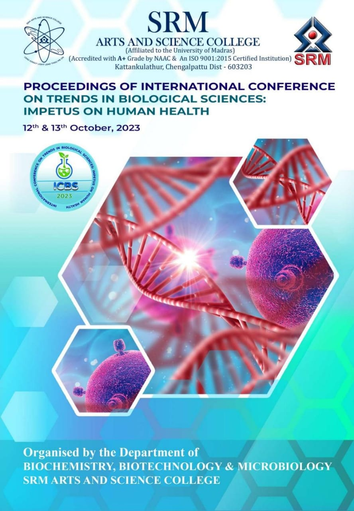

Congenital heart defects (CHDs) in children are abnormalities present at birth, ranging from simple to complex conditions. This studies primarily focuses on valve defects, such as tricuspid atresia and Hypoplastic left heart syndrome (HLHS), which often require surgical intervention. Physician commonly employ the Fontan procedure, redirecting blood flow to improve oxygenation by disconnecting the vena cava and connect it to pulmonary artery using mechanical valve. However, as children grow, mechanical valves remain fixed, necessitating revision surgeries. Using Bovine grafts can cause host rejection and complications. To address these challenges, Tissue Engineered Vascular Grafts (TEVGs) seeded with patient-specific stem cells offer promising solution. The process involves bio-printing a scaffold, ideally derived from collagen combined with PLA/PGA, and seeding it with the patient's stem cells. After days in culture to assess viability and desired properties, the TEVG is implanted. This innovative approach eliminates the risk of host rejection, grows with the child's heart, reducing the need for multiple surgeries and minimizing immunogenic complications offering promising prospects for addressing valve defects in CHD patients.
Download the posterThis paper was presented in the following event
